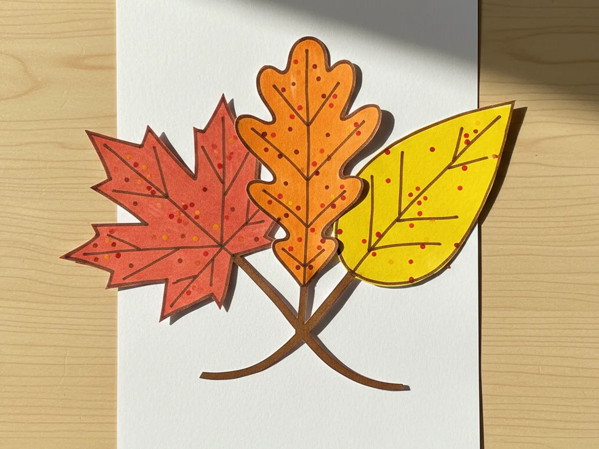
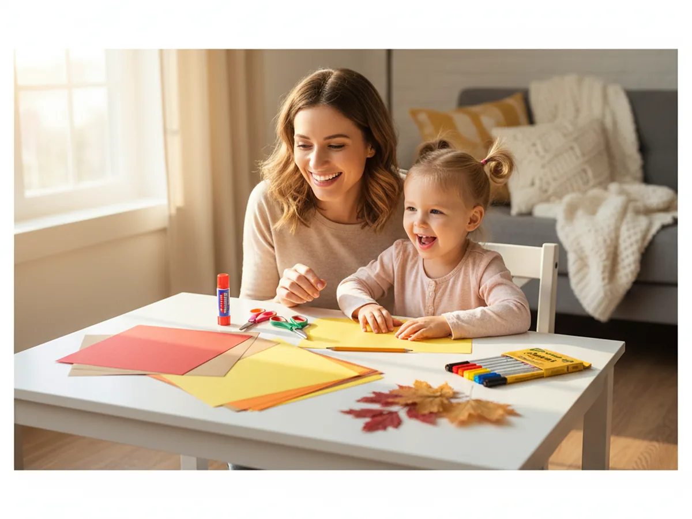
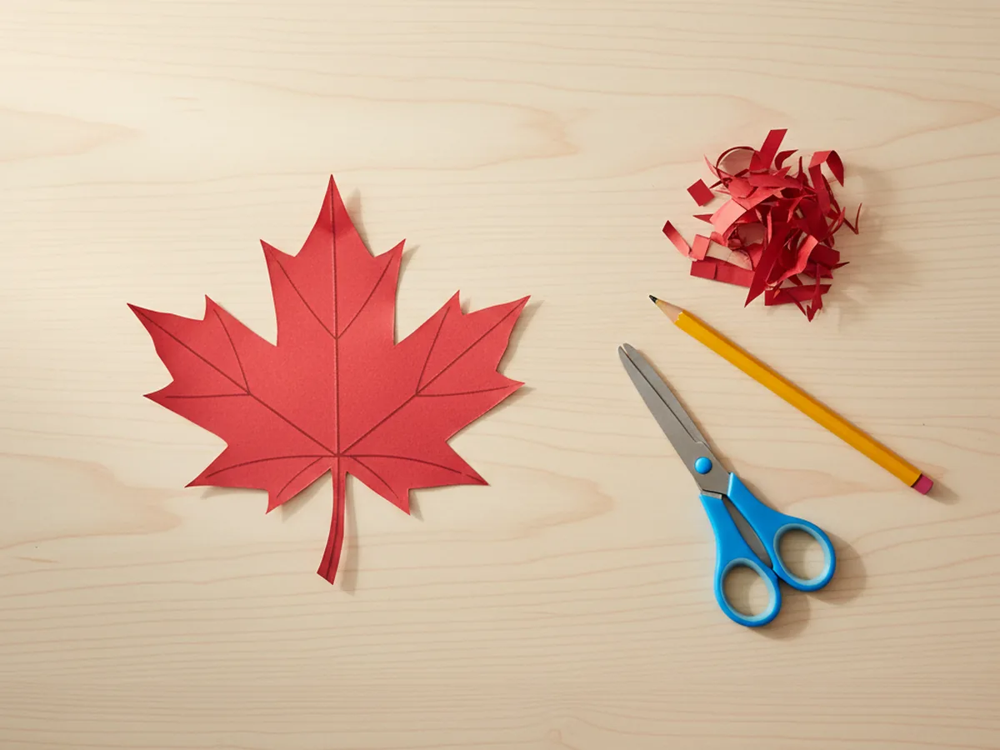
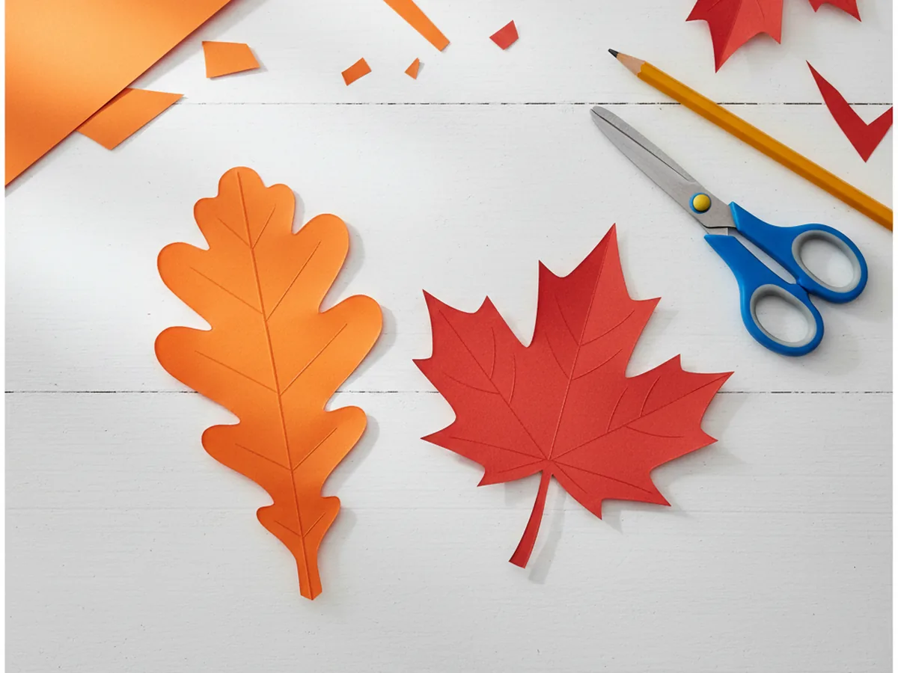
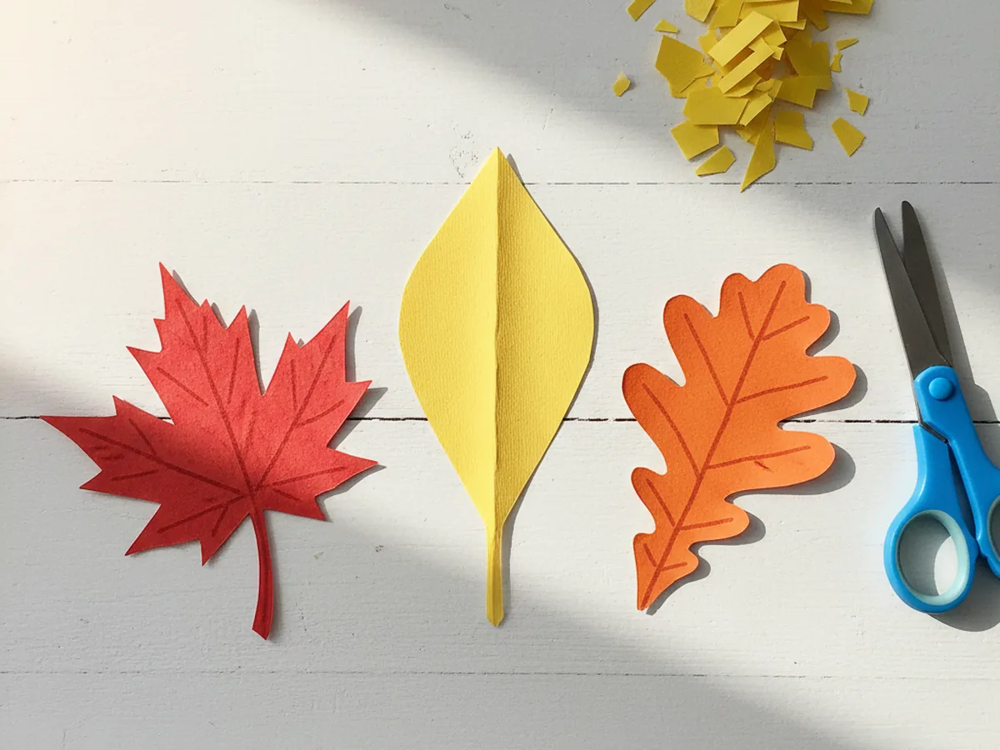
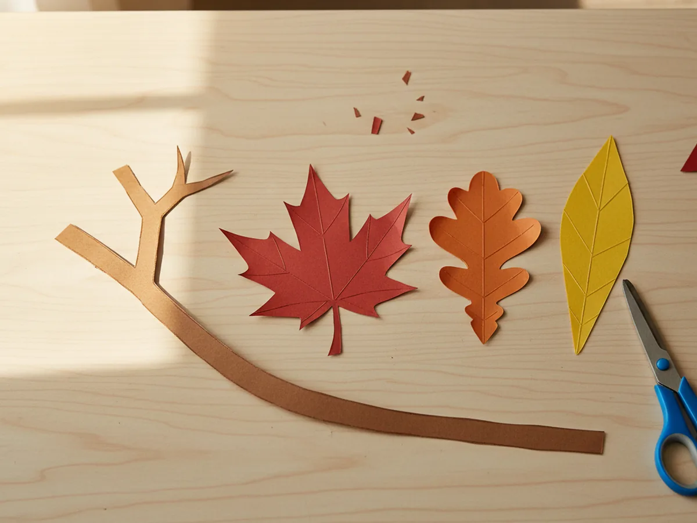
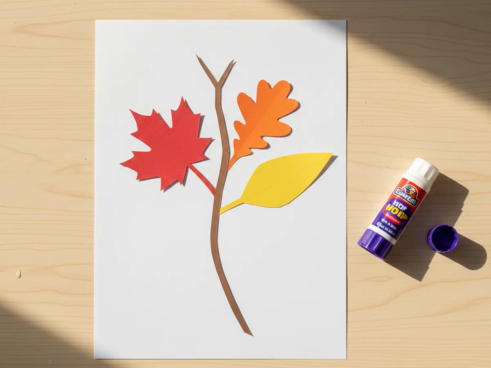
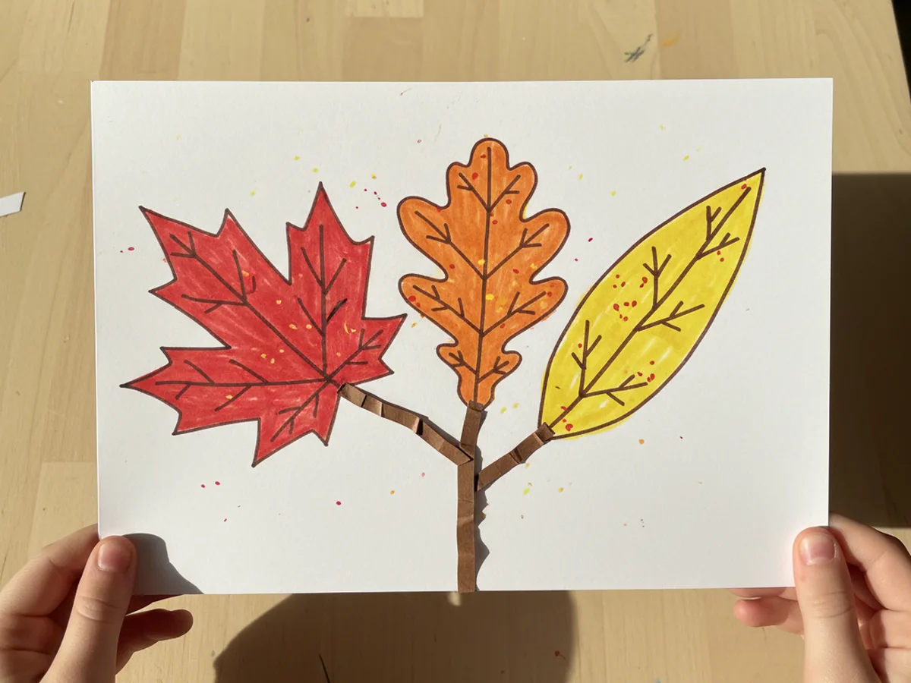

Few crafts feel as cozy and seasonal as a sweet little leaf craft paper bouquet you can make at the kitchen table. We are turning a few sheets of red, orange, and yellow construction paper into three pretty fall leaves, all gathered around a tiny brown paper twig like a tiny autumn arrangement. It comes together in about thirty five minutes, with no glitter to vacuum, no paint to scrub, and absolutely no special crafting skills required. 🍁
The reason this paper leaf craft is so beginner friendly is that every single piece is just a simple shape. A pointy maple leaf, a wavy oak leaf, a long teardrop poplar leaf, and a thin curved twig. Even my three year old, who is still learning how to angle her scissors, was able to chop out her own leaves with a little guidance. And when she added the last marker vein, she gasped and whispered "it looks like real fall." That little gasp is the whole reason we sit down to craft together.
Why Kids Love This Craft
Children adore this leaf craft paper project because it captures something they already love about going outside in autumn: collecting pretty leaves off the sidewalk. The familiar shapes feel instantly recognizable, even to the youngest crafters. They have spent whole afternoons picking up red and yellow leaves at the park, so making a paper version feels like bringing that magical fall walk indoors. That feeling of "I made the leaves" is huge for a little one and keeps them happily focused for the full activity.
This fall leaf paper craft is also wonderful for fine motor practice. Cutting curved leaf edges builds the same scissor control they need for school cutting projects. Drawing the center vein and tiny branching veins teaches them careful, deliberate hand movement. And choosing where to place each leaf on the twig gives them a little taste of arranging and composing, which is the same kind of thinking that turns into early art skills later on.
Best of all, this simple paper leaf craft ends with a real keeper. Your child can tape it to the fridge, slide it into a cardboard frame, or hand it proudly to grandma at Sunday dinner. That little moment of pride is exactly the kind of warm shared memory crafting is really about. 🌳

What You'll Need
Here is everything you need for this leaf craft paper bouquet. I always lay the colorful paper sheets out on the table first so my little one can see all the warm fall colors and pick which leaf she wants to cut first.
- Crayola Construction Paper, 240ct, 12 Assorted Colors, the perfect multi-color pack with the red, orange, yellow, and brown sheets you need.
- Neenah White Cardstock, 110 lb, 8.5 x 11, 185 Sheets, sturdy enough to display the finished leaf craft paper bouquet on the fridge.
- Elmer's Disappearing Purple Glue Sticks, washable and easy for tiny fingers to twist up and apply cleanly.
- Fiskars 5 Inch Blunt Tip Kids Scissors (3 Pack), the right safe size for cutting curved leaf edges and the thin paper twig.
- Crayola Broad Line Markers, 10 Classic Colors, ideal for drawing the leaf veins and adding tiny dots of fall color.
- A pencil, for lightly sketching the leaf shapes before cutting.
- A few real fall leaves, optional but lovely to have on the table as inspiration for tracing.
Step-by-Step Instructions
This leaf craft paper walks through six gentle steps that go from cutting the first leaf to drawing the last little vein. Take your time and let your child do as much of the cutting and gluing as they can comfortably manage.
Step 1: Cut Out the Red Maple Leaf
Start with a sheet of red construction paper. Help your child lightly draw a five point maple leaf shape with a pencil, about the size of their open palm, with three points on top and two smaller points on the sides. Then let them cut it out with kid scissors. Wonky edges only make this leaf craft paper look more handmade and charming, so do not worry about cutting perfectly along the lines.

Step 2: Cut Out the Orange Oak Leaf
Now grab a sheet of orange construction paper. Lightly sketch a wavy oak leaf shape, like a long oval with three or four soft rounded lobes on each side and a small stem at the bottom. Make it just slightly longer than the maple leaf so the bouquet has visual variety. Cut the leaf out together. If your child wants a darker autumn shade, deep orange or burnt red paper works just as well here.

Step 3: Cut Out the Yellow Poplar Leaf
Take a sheet of yellow construction paper and lightly draw a long teardrop shape, gently pointed at one end and rounded at the other, like a simple poplar or birch leaf. Cut it out together. This is the easiest leaf shape of the three, so it is a great one to let your child try on their own without much guidance. Three different leaf shapes make the finished paper leaf craft look like a real little autumn bouquet.

Step 4: Cut the Brown Paper Twig
Grab a sheet of brown construction paper and cut a long thin curved strip, about half an inch wide and the length of your hand. This will be the twig that holds your three paper leaves together like a real tiny bouquet. Cut a small Y shape at the top so two little side branches stick out for extra detail, but do not stress about it if your child cuts it straight. A simple straight twig still looks lovely.

Step 5: Glue Everything Onto the Cardstock
Take a sheet of white cardstock and lay it flat in portrait orientation. Show your child how to swipe the purple glue stick across the back of the brown paper twig, then press it down right in the middle of the cardstock with the Y branch toward the top. Now glue the red maple leaf, the orange oak leaf, and the yellow poplar leaf so they fan out from the twig like a sweet little bouquet, with each leaf overlapping the twig slightly. Press for a few seconds so the glue grabs.

Step 6: Draw the Veins and Final Details
Now for the very best part. Take a brown broad line marker and gently draw a single vein down the middle of each paper leaf, then add four or five smaller veins branching out toward the edges. The lines do not need to be perfectly even, and slightly wobbly marker work just makes this leaf craft paper bouquet look more child made and adorable. To finish, dot a few tiny freckles of red, orange, and yellow marker across the leaves to add that lovely autumn texture. Once the last freckle is in place, the paper bouquet is officially finished and ready to display. 🎉

Variations to Try
Leaf Garland Version: Instead of gluing the leaves onto cardstock, punch a small hole at the top of each one and string them along a piece of twine to make a sweet fall garland for the kitchen window. Add four or five extra leaves for a longer string and let your child pick the order.
Tissue Paper Mosaic Leaves: Skip the construction paper for the leaves and let your child glue torn squares of red, orange, and yellow tissue paper onto a paper leaf outline instead. The torn paper layers create a beautiful translucent texture that looks just like real fall foliage.
Real Leaf Tracing: Bring a few real fall leaves inside from a walk and let your child trace them onto construction paper with a pencil. Tracing real leaves teaches little ones to look closely at nature, and the cut out shapes will be more accurate than freehand drawing.
Final Thoughts
This leaf craft paper bouquet is one of those gentle little projects that takes almost no setup, leaves almost no mess, and gives the biggest happy smile when the very last vein is drawn across the yellow leaf. The cutting, the gluing, the careful placing of every paper leaf, every part of it unfolds at a calm pace that fits perfectly into a slow Saturday morning, a chilly fall afternoon, or a quiet hour after lunch. Whatever the moment, your child will remember the time the two of you made a tiny autumn bouquet out of paper side by side.
If your little one finishes their first sweet paper leaf bouquet, save this article on Pinterest so other craft loving mamas can find it easily. Happy crafting!
More Crafts You'll Love
If your child loved this leaf craft paper project, they will adore these other warm, cozy paper crafts too: